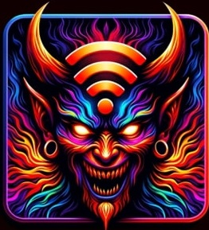

Summon Evil-M5Project onto your ESP32 - straight from the browser.
⚡ No install · Web SerialNot connected
Reuses the port you just flashed — no device picker. By default it attaches without resetting the board, so you read the firmware already running (a boot happens only on first-ever grant, or if you tick “reset board on open”). Same Chrome/Edge desktop requirement as flashing.
evil/ folder as a zip
and copy it to the root of the card.⚖️ This tool is intended solely for ethical network exploration, training and authorized testing. Only use these firmwares on equipment and networks you own or have explicit permission to test. The author accepts no liability for misuse.